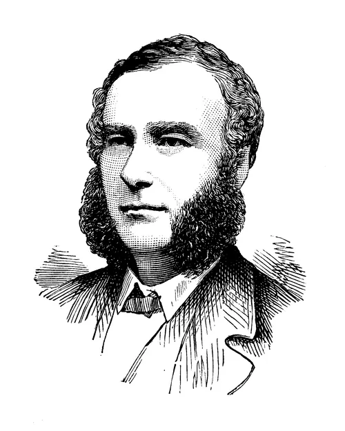

- Printed source
- Alfred Newton, “Abstract of Mr. J. Wolley’s Researches in Iceland respecting the Gare-fowl or Great Auk.” Ibis 3, no. 4 (October 1861): 374–399. Selected passage: 390–392.
Great auk / Primary source
Alfred Newton
“Abstract of Mr. J. Wolley’s Researches in Iceland respecting the Gare-fowl or Great Auk.”

Alfred NewtonImage & authority record ↗
01 / Reported eventJune 1844Departure between 2 and 5 June; arrival the following morning
02 / Interviews1858Newton and Wolley’s Iceland visit1
03 / PublicationOctober 1861Ibis 3, no. 4 · article pp. 374–399
Original text
English · pp. 390–392The party consisted of fourteen men: two of these are dead, but with all the remaining twelve we conversed1. They were commanded, as I have just said, by Vilhjalmur, and started in an eight-oared boat from Kyrkjuvogr, one evening between the 2nd and 5th of June, 1844. The next morning early they arrived off Eldey.
In form the island is a precipitous stack, perpendicular nearly all round. The most lofty part has been variously estimated to be from fifty to seventy fathoms in height; but on the opposite side a shelf (generally known as the ‘Underland’) slopes up from the sea to a considerable elevation, until it is terminated abruptly by the steep cliff of the higher portion. At the foot of this inclined plane is the only landing-place; and further up, out of the reach of the waves, is the spot where the Gare-fowls had their home.
In this expedition but three men ascended: Jon Brandsson, a son of the former leader, who had several times before visited the rock, with Sigurðr Islefsson and Ketil Ketilsson. A fourth, who was called upon to assist, refused, so dangerous did the landing seem. As the men I have named clambered up, they saw two Gare-fowls sitting among the numberless other rock-birds (Uria troile and Alca torda), and at once gave chase.
The Gare-fowls showed not the slightest disposition to repel the invaders, but immediately ran along under the high cliff, their heads erect, their little wings somewhat extended. They uttered no cry of alarm, and moved, with their short steps, about as quickly as a man could walk. Jon with outstretched arms drove one into a corner, where he soon had it fast. Sigurðr and Ketil pursued the second, and the former seized it close to the edge of the rock, here risen to a precipice some fathoms high, the water being directly below it. Ketil then returned to the sloping shelf whence the birds had started, and saw an egg lying on the lava slab, which he knew to be a Gare-fowl’s. He took it up, but finding it was broken, put it down again. Whether there was not also another egg is uncertain. All this took place in much less time than it takes to tell it. They hurried down again, for the wind was rising.
Edition
Further reading
- 01Gísli Pálsson, The Last of Its Kind ↗
Princeton University Press, 2024. - 02Tim R. Birkhead and Peter T. Gallivan, “Alfred Newton’s contribution to ornithology” ↗
Ibis 154 (2012): 887–905.
Reference
Cite this source
Newton, Alfred. “Abstract of Mr. J. Wolley’s Researches in Iceland respecting the Gare-fowl or Great Auk.” Ibis 3, no. 4 (1861): 374–399, especially 390–392. https://doi.org/10.1111/j.1474-919X.1861.tb08857.x.